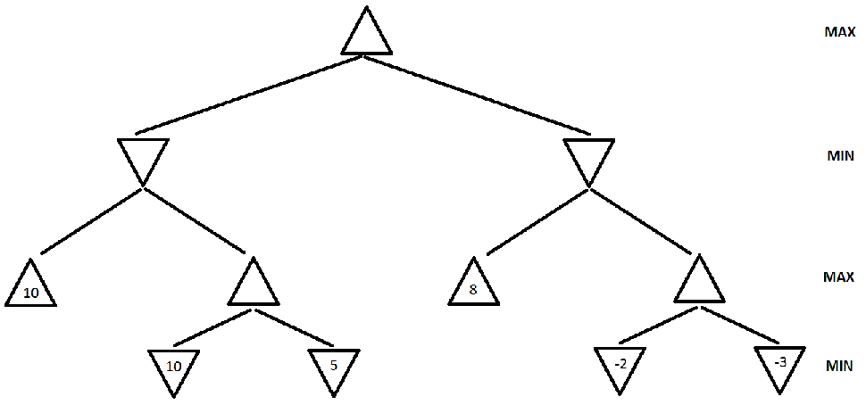

| X | |
|
| O | O | X |
| X |
O |
Consider the tic-tac-toe board state shown in Figure 1. Draw the full minimax search tree starting from this state, and ending in terminal nodes. Show the utility value for each terminal and non-terminal node. Also show which move the Minimax algorithm decides to play for X. Utility values are +1 if X wins, 0 for a tie, and -1 if O wins. (Note: X is the MAX player).

Figure 2. A game search tree.
a. (4308: 10 points, 5360: 10 points) In the game search tree of Figure 2, indicate what nodes will be pruned using alpha-beta search, and what the estimated utility values are for the rest of the nodes. Assume that, when given a choice, alpha-beta search expands nodes in a left-to-right order. Also, assume the MAX player plays first. Finally incidcate which action the Minmax algorithm will pick to exectute.
b. (4308: 5 points, 5360: 5 points) This question is also on the game search tree of Figure 2. Suppose we are given some additional knowledge about the game: the maximum utility value is 10, i.e., it is not mathematically possible for the MAX player to get an outcome greater than 10. How can this knowledge be used to further improve the efficiency of alpha-beta search? Indicate the nodes that will be pruned using this improvement. Again, assume that, when given a choice, alpha-beta search expands nodes in a left-to-right order, and that the MAX player plays first.
Write
an algorithm in pseudocode (following the style of the Minimax
pseudocode) that will always make an optimal decision given the
knowledge we have about DeepGreen. You are free to use the library
function DeepGreenMove(S) in your pseudocode. What advantage would this
algorithm have over Minimax? (if none, Justify).
Consider the MINIMAX tree above. Suppose that we are the MAX player, and we follow the MINIMAX algorithm to play a full game against an opponent. However, we do not know what algorithm the opponent uses.
Under these conditions, what is the best possible outcome of playing the full game for the MAX player? What is the worst possible outcome for the MAX player? Justify your answer.
NOTE: the question is not asking you about what MINIMAX will compute for the start node. It is asking you what is the best and worst outcome of a complete game under the assumptions stated above.